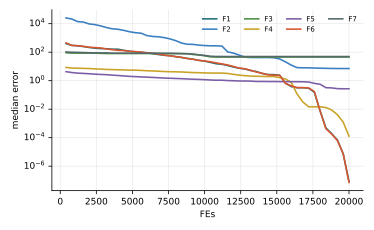

Chương 7 · Mục 7.1Chapter 7 · Section 7.1
Tối ưu bầy châu chấuGrasshopper Optimisation AlgorithmGrasshopper Optimisation Algorithm — GOAGOA — attraction, repulsion and a comfort zone
Châu Văn Vân · PTITHCM
Mục tiêu bài họcLearning objectives
Sau chương này, bạn có thểAfter this chapter you will be able to
- Phân biệt hai pha của bầy châu chấu: ấu trùng di chuyển chậm, trưởng thành bay xa và đột ngột.Distinguish the two swarm phases: slow-moving nymphs and long, abrupt adult flights.
- Viết hàm lực xã hội s(r) và giải thích vùng đẩy, vùng thoải mái, vùng hút.Write the social force s(r) and explain the repulsion, comfort and attraction zones.
- Viết phương trình cập nhật vị trí với hệ số co c và mục tiêu T̂d.Write the position update with the shrinking coefficient c and target T̂d.
- Giải thích vì sao GOA tốn O(n²) phép tính mỗi vòng.Explain why GOA costs O(n²) per iteration.
Tổng quanOverview
Bầy châu chấu: hút nhau ở xa, đẩy nhau ở gầnGrasshopper swarms: attract when far, repel when close
- Do Saremi, Mirjalili và Lewis đề xuất năm 2017 (Advances in Engineering Software 105).Proposed by Saremi, Mirjalili and Lewis in 2017 (Advances in Engineering Software 105).
- Ấu trùng châu chấu di chuyển chậm, từng bước nhỏ; con trưởng thành bay thành đàn, nhảy xa và đột ngột.Nymphs move slowly in small steps; adults swarm in the air with long, abrupt jumps.
- Hai con ở quá gần thì đẩy nhau, ở xa thì hút nhau, và có một khoảng cách “thoải mái” không có lực.Two grasshoppers too close repel, far apart attract, and in between lies a force-free “comfort” distance.
- GOA dùng lực xã hội này cộng với lực kéo về mục tiêu tốt nhất để tìm nghiệm.GOA combines this social force with a pull toward the best target found.
Mô hình toán họcMathematical model
Ba lực tác động lên một con châu chấuThree forces on one grasshopper
- Si: tương tác xã hội; Gi: trọng lực; Ai: gió đẩy.Si: social interaction; Gi: gravity; Ai: wind advection.
- f: cường độ hút, l: độ dài hút. Với f = 0.5, l = 1.5, lực đẩy khi r < 2.079 và hút khi r > 2.079.f: attraction strength, l: attractive length scale. With f = 0.5, l = 1.5, repulsion for r < 2.079 and attraction beyond.
- Lực gần như bằng 0 khi r > 4, nên khoảng cách cần được chuẩn hóa về đoạn nhỏ trước khi dùng.The force fades for r > 4, so distances must be mapped into a small interval before use.
Mô hình toán họcMathematical model
Bỏ trọng lực và gió, thêm lực kéo về mục tiêuDrop gravity and wind, add a pull toward the target
- T̂d: vị trí tốt nhất tìm được (mục tiêu) ở chiều d.T̂d: the best position found (target) in dimension d.
- c bên trong thu nhỏ vùng hút/đẩy theo thời gian; c bên ngoài thu nhỏ vùng tìm kiếm quanh mục tiêu. Thường cmax = 1, cmin = 0.00004.The inner c shrinks the repulsion/attraction zones; the outer c shrinks the search area around the target. Typically cmax = 1, cmin = 0.00004.
- Mỗi con châu chấu cộng lực từ mọi con khác, nên một vòng tốn O(n² · d) phép tính.Each grasshopper sums forces from all others, so one iteration costs O(n² · d).
Trong mã nguồn gốc, khoảng cách được ánh xạ về đoạn [2, 4) bằng 2 + rem(dij, 2) trước khi đưa vào s; mô phỏng dưới đây làm đúng như vậy.In the original code, distances are mapped into [2, 4) by 2 + rem(dij, 2) before entering s; the simulation below does the same.
Các bướcSteps
Các bước của GOAGOA step by step
Saremi, Mirjalili & Lewis (2017), theo mã gốc.Saremi, Mirjalili & Lewis (2017), following the original code.
- Khởi tạo n châu chấu; mục tiêu T̂ = lời giải tốt nhất.Initialize n grasshoppers; target T̂ = best solution.
- Tính c = cmax − t(cmax − cmin)/T.Compute c = cmax − t(cmax − cmin)/T.
- Với mỗi châu chấu: cộng lực xã hội s(r) từ mọi con khác, khoảng cách ánh xạ vào [1, 4).For each grasshopper: sum social forces s(r) from all others, distances mapped into [1, 4).
- Vị trí mới = c × tổng lực + mục tiêu T̂; kẹp biên.New position = c × total force + target T̂; clip to bounds.
- Cập nhật mục tiêu; lặp đến hết ngân sách.Update the target; repeat until the budget is spent.
2 – 5 vòng lặp chínhmain loop
Thuật toánAlgorithm
Lưu đồFlowchart
Tham sốParameters
Tham số của GOAGOA parameters
| Tham sốParameter | Ý nghĩaMeaning | Giá trị thường dùngTypical value |
|---|---|---|
| f, l | Cường độ hút và độ dài hútAttraction intensity and length scale | 0.5, 1.5 |
| cmax, cmin | Hệ số thu hẹp vùng thoải máiComfort-zone shrinking coefficient | 1, 4·10−5 |
Chi phí mỗi vòng là O(n² D) vì phải tính lực giữa mọi cặp.Each iteration costs O(n² D) because forces between all pairs are computed.
Thuật toán GOAThe GOA algorithm
Mã giảPseudocode
Tham số: n, L, cmax, cmin, f, l; thường giữ f = 0.5, l = 1.5.Parameters: n, L, cmax, cmin, f, l; usually f = 0.5, l = 1.5.
- Khởi tạo n châu chấu; T̂ ← con tốt nhấtInitialize n grasshoppers; T̂ ← the best
- for l = 1 … L
- Cập nhật cUpdate c
- for mỗi châu chấueach grasshopper i
- Chuẩn hóa khoảng cách; cộng lực xã hội từ mọi j ≠ iNormalize distances; sum social forces from every j ≠ i
- Cập nhật Xi theo công thức; kẹp trong miềnUpdate Xi; clamp to the bounds
- Đánh giá; cập nhật T̂ nếu có con tốt hơnEvaluate; update T̂ if improved
- return T̂
Mô phỏngSimulation
20 con châu chấu trên cùng địa hình20 grasshoppers on the same landscape
Lúc đầu c ≈ 1 nên bầy nhảy xa quanh mục tiêu; khi c nhỏ dần, cả bầy co lại quanh mục tiêu (ô vuông cam).Early on c ≈ 1 and the swarm jumps widely around the target; as c shrinks, the swarm contracts onto it (orange square).
Tham số: n = 20, L = 60, f = 0.5, l = 1.5. Với cấu hình này, bầy co về một hố cục bộ phía dưới bên trái: đúng hạn chế nêu ở slide Đánh giá.Settings: n = 20, L = 60, f = 0.5, l = 1.5. With this setup the swarm contracts onto a local basin at the lower left: exactly the limitation in the Assessment slide.
Ví dụ trong sách tham khảoExample from the reference book
Okwu & Tartibu (2021), chương 10: hàm Bukin N.6Okwu & Tartibu (2021), chapter 10: the Bukin N.6 function
| Nội dungItem | Sách ghiThe book says | Kiểm chứngVerified |
|---|---|---|
| Hàm mục tiêuObjective | 100(y − 0.01x²) + 0.01|x + 10|100(y − 0.01x²) + 0.01|x + 10| | 100√|y − 0.01x²| + 0.01|x + 10|: thiếu căn và trị tuyệt đối100√|y − 0.01x²| + 0.01|x + 10|: missing root and absolute value |
| Nghiệm tốt nhấtBest solution | [10, 1], f = 0.2361[10, 1], f = 0.2361 | Cực tiểu toàn cục ở (−10, 1) với f = 0; f(10, 1) = 0.2Global minimum at (−10, 1) with f = 0; f(10, 1) = 0.2 |
| Người đề xuấtProposed by | “Mirjalili (2015)”“Mirjalili (2015)” | Saremi, Mirjalili & Lewis (2017)Saremi, Mirjalili & Lewis (2017) |
Hàm Bukin N.6 có một thung lũng hẹp dọc parabol y = 0.01x², rất khó cho mọi thuật toán; kết quả 0.2361 là chưa đạt tối ưu.Bukin N.6 has a narrow valley along y = 0.01x² that is hard for every algorithm; 0.2361 is not optimal.
Ví dụ tính tayWorked example
Lực xã hội s(r) đẩy hay hút?Is the social force s(r) repulsive or attractive?
- s(1) = 0.5 e−0.667 − e−1 = −0.111: đẩy ra (quá gần).s(1) = 0.5 e−0.667 − e−1 = −0.111: repulsion (too close).
- s(3) = 0.5 e−2 − e−3 = 0.018: hút vào (khá xa).s(3) = 0.5 e−2 − e−3 = 0.018: attraction (fairly far).
Vùng thoải máiComfort zone
- s(r) = 0 tại r ≈ 2.079: không hút cũng không đẩy.s(r) = 0 at r ≈ 2.079: neither attraction nor repulsion.
- Vì khoảng cách được ánh xạ vào [1, 4), cả hai vùng đều luôn xuất hiện.Since distances are mapped into [1, 4), both regimes always appear.
Các biến thểVariants
Các biến thể của GOAGOA variants
MOGOAMOGOA
Bản đa mục tiêu (Mirjalili và cs., 2018).Multi-objective version (Mirjalili et al., 2018).
GOA nhị phânBinary GOA
Cho chọn đặc trưng.For feature selection.
GOA + Lévy / hỗn loạnGOA + Lévy / chaos
Tăng khám phá cho bài toán nhiều chiều.More exploration for high-dimensional problems.
GOA laiHybrid GOA
Kết hợp với DE, PSO.Combined with DE, PSO.
Ứng dụngApplications
Ứng dụng của GOAGOA applications
Các bài toán thường gặp với GOA.Problems commonly tackled with GOA.
Kết cấuStructures
Thiết kế giàn và dầm.Truss and beam design.
Năng lượngEnergy
Điều độ, ước lượng tham số pin mặt trời.Dispatch, solar-cell parameter estimation.
Học máyMachine learning
Chỉnh SVM, chọn đặc trưng.SVM tuning, feature selection.
Lập lịchScheduling
Bản rời rạc cho lập lịch tác vụ.Discrete versions for task scheduling.
Thực nghiệm · GOAExperiment · GOA
Kết quả trên bộ 7 hàm, D = 10, 30 lần chạyResults on the 7-function suite, D = 10, 30 runs
| HàmFunction | Trung bìnhMean | Độ lệchStd | Trung vịMedian | so PSOvs PSO |
|---|---|---|---|---|
| F1 · Sphere | 1.01e−7 | 6.46e−8 | 8.73e−8 | − |
| F2 · Rosenbrock | 1.00e+2 | 4.63e+2 | 7.12e+0 | − |
| F3 · Rastrigin | 4.58e+1 | 1.82e+1 | 4.53e+1 | − |
| F4 · Ackley | 2.37e+0 | 5.65e+0 | 1.29e−4 | − |
| F5 · Griewank | 2.83e−1 | 1.32e−1 | 2.71e−1 | − |
| F6 · Shifted Sphere | 8.82e−8 | 6.17e−8 | 7.29e−8 | − |
| F7 · Shifted Rastrigin | 5.46e+1 | 2.10e+1 | 4.97e+1 | − |
- Sai số f(xbest) − f* sau 20 000 lần đánh giá; n = 30; tham số mặc định của bài gốc; giá trị < 10−8 ghi là 0.Error f(xbest) − f* after 20,000 evaluations; n = 30; default parameters of the original paper; values < 10−8 shown as 0.
- Cột cuối: Wilcoxon rank-sum với PSO (α = 0.05): + tốt hơn, − kém hơn, ≈ không khác biệt.Last column: Wilcoxon rank-sum vs PSO (α = 0.05): + better, − worse, ≈ no difference.
- Xếp hạng Friedman trung bình: 13.71, đứng thứ 15/18 trong 18 thuật toán của giáo trình.Average Friedman rank: 13.71, position 15/18 among the textbook’s 18 algorithms.
- GOA đứng gần cuối (13.71): lực xã hội O(n²) tốn nhiều tính toán nhưng không cải thiện tìm kiếm trong ngân sách này.GOA ranks near the bottom (13.71): the O(n²) social force is costly but does not improve search within this budget.
Thực nghiệm · GOAExperiment · GOA
Đường hội tụ (trung vị 30 lần chạy)Convergence (median of 30 runs)

Mã nguồnSource code
Mã nguồn PythonPython source code
Đoạn trích phần cập nhật chính; tệp đầy đủ có chú thích và tham số mặc định theo bài gốc.Excerpt of the main update; the full file documents the default parameters of the original paper. code/si/algorithms/goa.py
while not prob.done: t += 1 c = cmax - t * (cmax - cmin) / T diff = X[None, :, :] - X[:, None, :] # x_j - x_i dist = np.linalg.norm(diff, axis=2) + 1e-14 mapped = 2 + np.mod(dist, 2) coef = s(mapped) / dist np.fill_diagonal(coef, 0) S = np.einsum('ij,ijd->id', coef, diff) * (c * half) X = prob.clip(c * S + target) fx = prob(X) if prob.best_x is not None: target = prob.best_x.copy() return prob.best_x, prob.best_f
Chạy lại toàn bộ thực nghiệm: python -m experiments.run_continuous trong thư mục code/ (xem PROTOCOL.md).Reproduce all experiments: python -m experiments.run_continuous inside code/ (see PROTOCOL.md).
Đánh giáAssessment
Lực xã hội cho chuyển động tự nhiên, nhưng tốn kémNatural motion from social forces, but costly
Điểm mạnhStrengths
- Vùng thoải mái giữ khoảng cách giữa các cá thể, giảm hiện tượng chồng lên nhau.The comfort zone keeps individuals apart and reduces crowding.
- Hệ số c giảm dần cho chuyển pha mượt từ khám phá sang khai thác.The decreasing c gives a smooth switch from exploration to exploitation.
- Ứng dụng: điều độ tải, thiết kế kết cấu, bố trí nút chuyển tiếp trong mạng cảm biến.Applications: load dispatch, structural design, relay-node placement in sensor networks.
Hạn chế và biến thểLimitations and variants
- Tổng lực O(n²) mỗi vòng; chậm khi bầy lớn.The O(n²) force sum per iteration is slow for large swarms.
- Vị trí mới không phụ thuộc vị trí cũ trực tiếp mà luôn quy về T̂; dễ kẹt nếu mục tiêu là cực trị cục bộ.New positions are always anchored on T̂ rather than the previous position; a local-optimum target traps the swarm.
- Biến thể: GOA đa mục tiêu MOGOA (Mirjalili và cs., 2018), GOA nhị phân, GOA hỗn loạn.Variants: multi-objective MOGOA (Mirjalili et al., 2018), binary GOA, chaotic GOA.
Bài tập và thực hànhExercises and labs
Luyện tập: tính tay rồi lập trìnhPractice: by hand, then in code
Bài tập lý thuyếtTheory exercises
- Tính s(1), s(2.079), s(3) với f = 0.5, l = 1.5. Mỗi giá trị là đẩy hay hút?Compute s(1), s(2.079), s(3) with f = 0.5, l = 1.5. Repulsion or attraction?
- Với cmax = 1, cmin = 0.00004, L = 100, tính c tại l = 50.With cmax = 1, cmin = 0.00004, L = 100, compute c at l = 50.
- Vì sao cần chuẩn hóa khoảng cách trước khi tính s?Why must distances be normalized before computing s?
Thực hành Python / MATLABPython / MATLAB labs
- Cài GOA và vẽ quỹ đạo của con châu chấu đầu tiên như hình 10.8 trong sách.Implement GOA and plot the first grasshopper's trajectory as in the book's figure 10.8.
- Chạy lại ví dụ Bukin N.6 với hàm đúng; báo cáo nghiệm và số lần đánh giá.Rerun the Bukin N.6 example with the correct function; report the solution and evaluation count.
- Đo thời gian chạy khi n = 20, 50, 100 để thấy chi phí O(n²).Time runs with n = 20, 50, 100 to observe the O(n²) cost.
Tài liệu tham khảoReferences
Đọc thêm: các bài báo gốcFurther reading: the original papers
- S. Saremi, S. Mirjalili, and A. Lewis, “Grasshopper Optimisation Algorithm: Theory and application,” Advances in Engineering Software, vol. 105, pp. 30–47, 2017, doi: 10.1016/j.advengsoft.2017.01.004.
- S. Z. Mirjalili, S. Mirjalili, S. Saremi, H. Faris, and I. Aljarah, “Grasshopper optimization algorithm for multi-objective optimization problems,” Appl Intell, vol. 48, no. 4, pp. 805–820, 2018, doi: 10.1007/s10489-017-1019-8.
- S. Arora and S. Singh, “Butterfly optimization algorithm: a novel approach for global optimization,” Soft Comput, vol. 23, no. 3, pp. 715–734, 2019, doi: 10.1007/s00500-018-3102-4.
- M. O. Okwu and L. K. Tartibu, Metaheuristic Optimization: Nature-Inspired Algorithms Swarm and Computational Intelligence, Theory and Applications. Springer International Publishing, 2021, doi: 10.1007/978-3-030-61111-8.
Tóm lạiIn short
Cảm ơn các bạn đã theo dõiThank you for your attention
Châu Văn Vân · PTITHCM · Tài liệu gốc: Saremi, Mirjalili & Lewis, Advances in Engineering Software 105, 2017Original paper: Saremi, Mirjalili & Lewis, Advances in Engineering Software 105, 2017